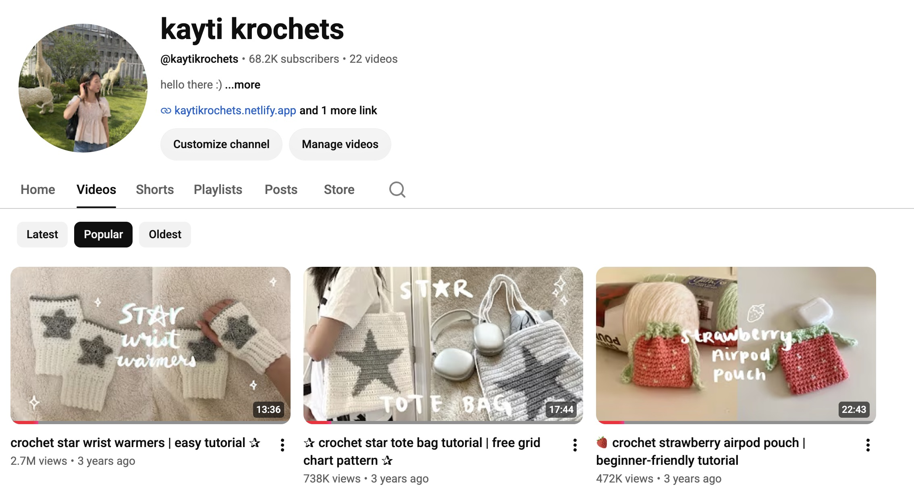
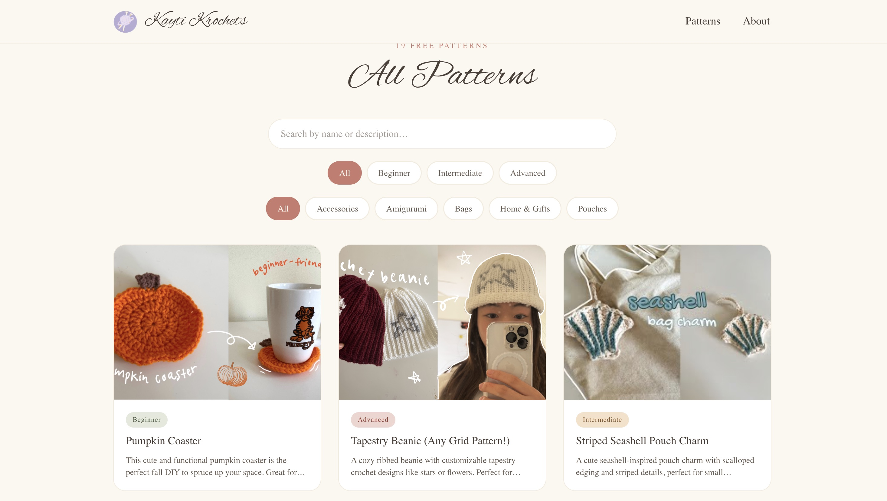
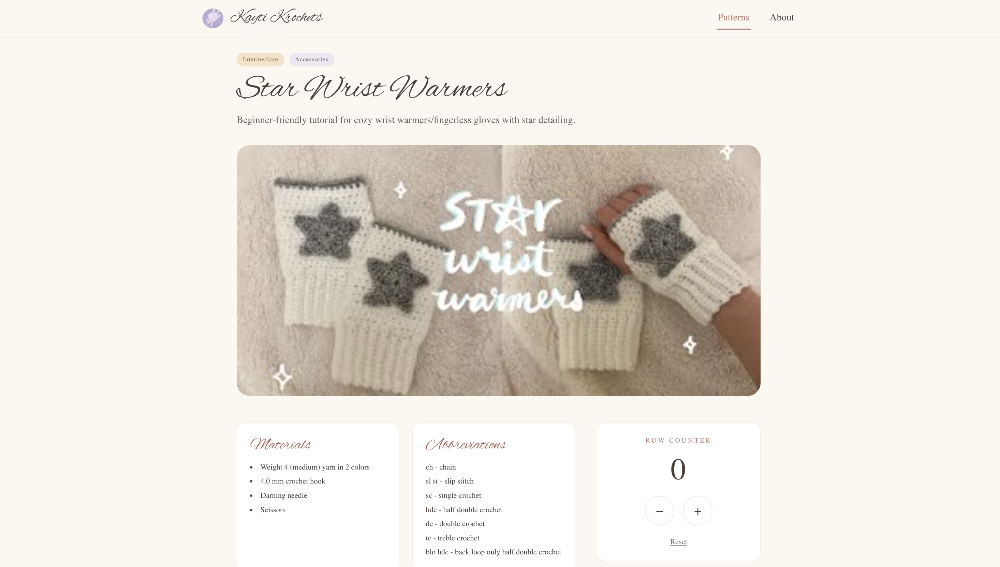

Kayti Krochets

the problem
Many of my YouTube channel supporters (@kaytikrochets with 68K+ subscribers) requested written versions of my crochet design tutorials — it's hard to follow a stitch pattern while also pausing and rewinding a video. In lieu of creating a free resource for my subscribers, the endeavor for this website thus began.
what i did
Upon first creating a prototype via Figma, I used a tech stack of React, Tailwind CSS, and Netlify to create and deploy my site to the internet! Every pattern lives in a browsable index, each with its own page for the full written tutorial, and the site links back to the YouTube channel for anyone who wants to follow along with the video too.
how it works



the result
This site attracts ~200 visitors per month on average, peaking at upwards of 500 per month during peak seasons. There is nothing more rewarding than helping others start or progress their crochet journeys through my designs and tutorials.